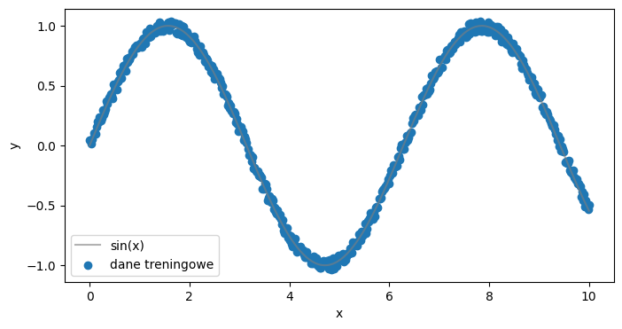

# import potrzebnych bibliotek
import torch
import matplotlib.pyplot as plt
from IPython.display import clear_output
torch.manual_seed(1234)<torch._C.Generator at 0x12a37f350>sin(x)<torch._C.Generator at 0x12a37f350>Wygenruj dane:
xsi wygeneruj wartości funckji sin(x). Do zmiennej y zastosuj drobną zmianę dodając wartości losowe.x pamiętaj o zmianie widoku : view(-1,1)Ponizszy wykres wygeneruje Ci graficzną reprezentację danych
x = torch.linspace(0,10,500).view(-1,1)
si = torch.sin(x).view(-1,1)
y = si + 0.1*(torch.rand(500).view(-1,1)-0.5)
plt.figure(figsize=(8,4))
plt.plot(x, torch.sin(x).view(-1,1), color="tab:grey", alpha=0.6, label="sin(x)")
plt.scatter(x, y, label="dane treningowe")
plt.xlabel('x')
plt.ylabel('y')
plt.legend()
plt.show()
Korzystając z wartwy gęstej torch.nn.Linear(), oraz funkcji aktywacji (np. torch.nn.ReLU(), torch.nn.Tanh() i inne) utwórz sieć z kilkoma (przynajmniej jedną warstwą ukrytą) pozwalającą wygenerować model regresji. Do definicji uzyj obiektu Sequential() - sprawdź w dokumentacji po co taki obiekt.
Poniszy kod wytrenuje Twoją sieć:
##############
# zdefiniuj obiekt modelu.
model = SinusEstimator(1,1)
###########
learning_rate=0.001
optimiser = torch.optim.Adam(model.parameters(), lr=learning_rate)
criterion = torch.nn.MSELoss()
# dodatkowa funkcja - warto zrealizować
losses = []
def callback(model, loss):
losses.append(loss.item())
clear_output(wait=True)
prediction = model(x).detach()
plt.figure(figsize=(6,2.5))
plt.plot(x[:,0].detach(), torch.sin(x)[:,0].detach(), label="Exact solution", color="tab:grey", alpha=0.6)
plt.plot(x[:,0].detach(), prediction[:,0], label="Classical solution", color="tab:green")
plt.title(f"Training step {len(losses)}")
plt.legend()
plt.show()
plt.figure(figsize=(6,2.5))
plt.title('Lossfn Visualised')
plt.plot(losses)
plt.show()
def train(X, Y, model, optimiser, epochs, lossfn, callback = None):
for _ in range(epochs):
model.train()
prediction = model(X)
loss = lossfn(prediction, Y)
optimiser.zero_grad()
loss.backward()
optimiser.step()
model.eval()
if callback != None:
callback(model, loss)Uruchom funkcję train() z odpowiednimi parametrami.
x, ymodeloptimiser500 (mozesz tez przetestowac najpierw 10 a potem np. 1000)criterioncallbackspradz czy inna definicja funkcji kosztu special_loss_fn usprawni wyniki sieci
Zdefiniujmy nową strukturę siec - wymieniając warstę ukrytą na obwód kwantowy.
class QN(nn.Module):
'''Classical -> Quantum -> Classical'''
def __init__(self, N_INPUT: int, N_OUTPUT: int, Q_NODE, N_QUBITS):
super().__init__()
self.layers = nn.Sequential(
# input layer
nn.Linear(N_INPUT, N_QUBITS),
# 1st hidden layer as a quantum circuit
Q_NODE,
# output layer
nn.Linear(N_QUBITS, N_OUTPUT)
)
def forward(self, x):
return self.layers(x)Jak mozesz zauwazyc po warstwie wejsciowej umiescilismy obietk Q_NODE, którego funkcję podstawimy jako trzeci parametr naszej sieci.
Bez większego wchodzenia w definicję tego obiektu nasz obwód kwantowy musi pobrać dane z warstwy poprzedniej i wypuścić jakieś wyniki do warstwy wynikowej. Oczywiście taką operację musi realizować jakaś funkcja (obiekt) w pythonie.
class QN(torch.nn.Module):
'''Classical -> Quantum -> Classical'''
def __init__(self, N_INPUT: int, N_OUTPUT: int, Q_NODE, N_QUBITS):
super().__init__()
self.layers = troch.nn.Sequential(
# input layer
torch.nn.Linear(N_INPUT, N_QUBITS),
# 1st hidden layer as a quantum circuit
Q_NODE,
# output layer
torch.nn.Linear(N_QUBITS, N_OUTPUT)
)
def forward(self, x):
return self.layers(x) # NASZ kwantowy PQC - parametryzowany obwód kwantowy dla jednej warstwy ukrytej
import pennylane as qml
n_qubits = 2
dev = qml.device("default.qubit", wires=n_qubits)
@qml.qnode(dev)
def qnode(inputs, weights):
qml.AngleEmbedding(inputs, wires=range(n_qubits))
qml.BasicEntanglerLayers(weights, wires=range(n_qubits))
return [qml.expval(qml.PauliZ(wires=i)) for i in range(n_qubits)]
n_layers = 5
weight_shapes = {"weights": (n_layers, n_qubits)}
qlayer = qml.qnn.TorchLayer(qnode, weight_shapes)Uruchomienie sieci mozesz zrealizowac ponizszym kodem
def mse(y, y_pred) -> torch.Tensor:
# oblicz średnią z roznnicy y i y_pred podniesionej do kwadratu
return ...
#########################
# utworz zmienna qmodel z parametrami (1,1, qlayer, n_qubits)
# Twoj kod
#
qmodel = ...
#####
print(qmodel)
x = x.requires_grad_(True)
x_train = x.requires_grad_(True)
learning_rate=1e-3
optimiser = torch.optim.Adam(qmodel.parameters(), lr=learning_rate)
losses = []
def special_loss_fn(y, y_pred) -> torch.Tensor:
return mse(y, y_pred) + torch.mean((y_pred - torch.sin(x))**2)
train(x_train, y, qmodel, optimiser, 500, special_loss_fn, callback)Sprawdz wyniki kodem:
def plot_result(x,y,x_data,y_data,yh, title=None):
plt.figure(figsize=(8,4))
plt.title(title)
plt.plot(x,y, color="tab:grey", alpha=0.6, label="Exact solution")
plt.plot(x,yh, color="tab:green", label="Neural network prediction")
plt.scatter(x_data, y_data, alpha=0.3, label='Training data')
l = plt.legend(loc='best')
plot_result(
x.detach(),
torch.sin(x).detach(),
x.detach(),
y.detach(),
qmodel(x).detach(),
title='Training of PINN'
)
print(mse(qmodel(x), torch.sin(x)))